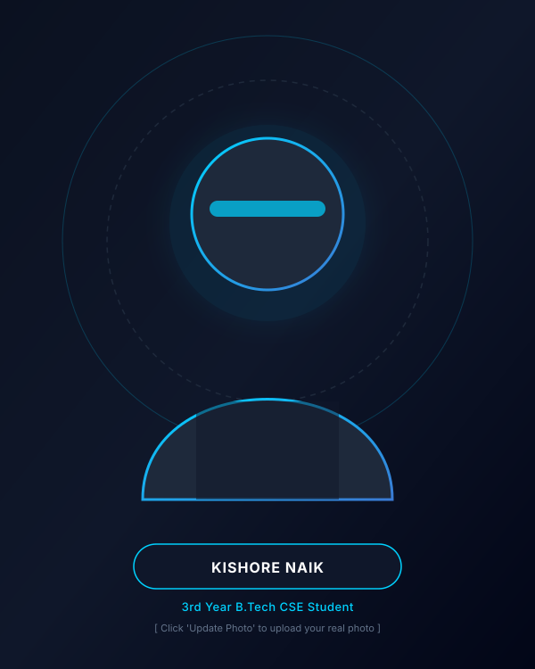
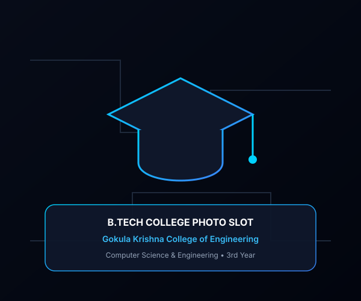
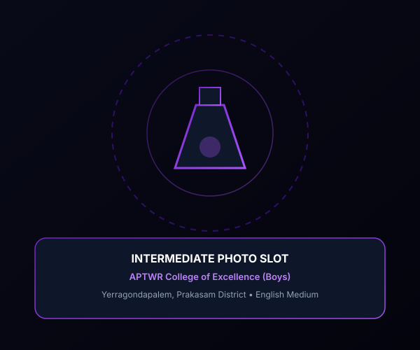
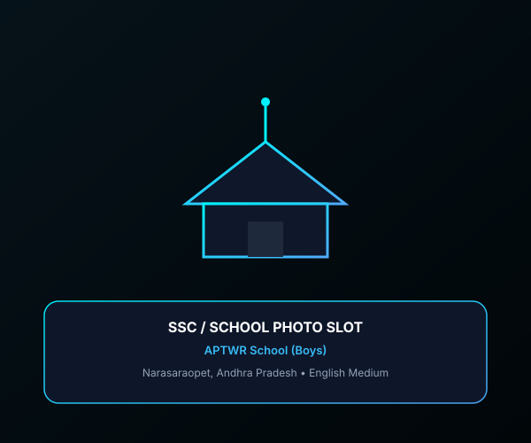
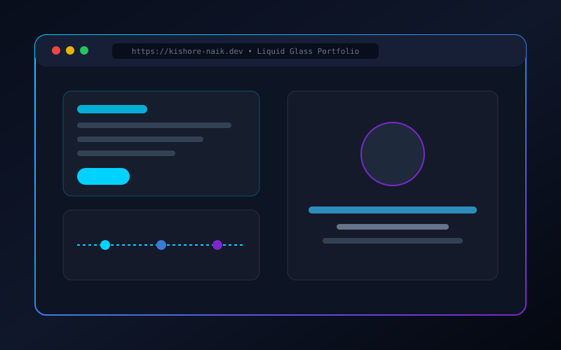
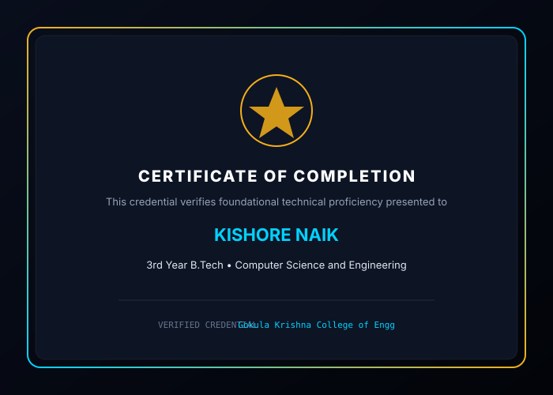

I am Kishore Naik, a 3rd Year B.Tech Computer Science and Engineering student at Gokula Krishna College of Engineering, passionate about technology, software development, problem solving, and building useful digital experiences.

I am Kishore Naik, currently pursuing my 3rd Year B.Tech in Computer Science and Engineering. I enjoy learning new technologies, developing applications, solving problems, and exploring innovative ideas.
My journey in Computer Science is driven by an ambition to translate conceptual ideas into practical, reliable, and user-centric software. Whether analyzing algorithms, building responsive web interfaces, or exploring cutting-edge developments in artificial intelligence, I approach technology with discipline, curiosity, and an eagerness to learn.
My roots keep me grounded. Coming from Bommarajupalli Thanda in Palnadu District, every step in my education—from tribal welfare residential schooling to excellence colleges and engineering—is built on perseverance, community pride, and an unwavering desire to make a meaningful difference.
An interactive timeline tracing my growth through English medium schooling, state residential college of excellence, and B.Tech in Computer Science and Engineering.
Pursuing core Computer Science and Engineering studies. Deepening theoretical comprehension in Data Structures, Object-Oriented Programming, and Database Systems while actively developing hands-on web and software projects.

Studied at the state-recognized College of Excellence in Yerragondapalem under the Tribal Welfare Department. Built an exceptional analytical and mathematical foundation that laid the stepping stones for my engineering career.

Completed secondary schooling in English Medium at APTWR School (Boys), Narasaraopet. This foundational period ignited my passion for mathematics and computers, creating the vision for my future in software engineering.

Hands-on proficiency across programming languages, web development stacks, core algorithmic reasoning, and emerging tech interests.
Programming for me is the craft of converting complex requirements into unambiguous, efficient logic. I enjoy breaking down problems into sub-problems, tracing edge cases, and selecting optimal data structures for space and time efficiency.
public int searchElement(int[] nums, int target) {
int left = 0, right = nums.length - 1;
while (left <= right) {
int mid = left + (right - left) / 2;
if (nums[mid] == target) return mid;
if (nums[mid] < target) left = mid + 1;
else right = mid - 1;
}
return -1;
}Real software applications, student utilities, and interactive web systems built with clean code and modern design principles.
A high-performance, dark-mode personal developer website built with an Apple-inspired Liquid Glass UI, modular architecture, interactive timelines, and zero-friction photo customization.
portfolio-data.js

Tracing milestones from school and college of excellence to programming exploration, practical projects, and future career horizons.
Academic selections, verified coursework milestones, and technical development achievements.
Practical software development, academic teamwork, and continuous self-driven skill acquisition.
Interests that cultivate creativity, analytical depth, and lifelong curiosity.
Instrumental and ambient focus soundtracks powering coding sessions.
Enjoying strategy, logic puzzles, and tactical decision-making mechanics. Appreciating game mechanics and physics engines.
Curious about intelligent systems, language models, neural representations, and how AI accelerates software engineering.
Diving deep into code architectures, open source repositories, and modern web frameworks to continuously elevate my skills.
The moral foundation, encouragement, and inspiration behind every step of my academic and personal journey.
Moments capturing academic milestones, campus life, developer sessions, and cherished memories.
A concise overview of my academic foundation, technical skillset, projects, and contact credentials.
Engineered modular web projects including Algorithm Visualizers, Student Academic Trackers, and the Liquid Glass Portfolio System. Actively preparing for software engineering internship roles.
Have an idea, internship opportunity, technical collaboration, or simply want to say hello? I'd love to connect.

Select your authentic photographs directly from your computer. They preview instantly in the browser without altering or distorting your face.
assets/images/ folder as profile.jpg,
btech.jpg, intermediate.jpg, and ssc.jpg.